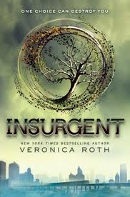

The Divergent Trilogy
The Divergent Trilogy is written by Veronica Roth.
For more information on The Divergent Trilogy, click here.

Divergent by Veronica Roth.
Courtesy of wikipedia.com
Divergent
Publication date: April 25, 2011
Book 1 of The Divergent Trilogy.
Set in a dystopian Chicago, society is divided into five factions representing a distinct moral value: Candor (the honest), Abnegation (the selfless), Dauntless (the brave), Amity (the peaceful), and Erudite (the intelligent). Every 16-year-old is to decide upon a faction on a fixed day of each year to which they will commit their entire lives. Beatrice Prior, being 16, is forced to choose between her family or her true self and makes a decision that shocks everyone.
Thorughout the painstaking initiation afterwards, Beatrice, now going by Tris, grapples with the resulting consequences of her choice alongside her initiate counterparts, their abilities put to the test and stretched to the limit, both physically and psychologically. As their training changes them, Tris moves forward with a secret she has kept concealed from everyone to evade death. But, with the growing threat of a political dispute jeopardizing their well-established society, Tris discovers that her secret could have the possibility of saving those she cares about... or it can ruin her.
|

Insurgent by Veronica Roth.
Courtesy of wikipedia.com
Insurgent
Publication date: May 1. 2012
Book 2 of The Divergent Trilogy.
|

Allegiant by Veronica Roth.
Courtesy of wikipedia.com
Allegiant
Publication date: October 22, 2013
Book 3 and the final installment of The Divergent Trilogy.
|
Characters
Beatrice (Tris) Prior

Tris
Courtesy of pinterest.com
Tris Prior is the main protagonist and narrates all three books in the Divergent Trilogy. Strong-willed, she hates showing weakness. Born in the faction Abnegation, she embraces her true self during the Choosing ceremony as she transfers to Dauntless and trains as an initiate, so it should not come as a surprise that she is brave. Tris is also selfless and intelligent, which explains her Divergence. Furthermore, she is willing to risk her life and make sacrifices for the people she cares about. As well, she has the two opposing characteristics of a temper and sensitivity. Tris is also known for her curiosity.
Tobias (Four) Eaton
Tobias
Courtesy of pinterest.com
Tobias Eaton is the deuteragonist of all three books in the Divergent Trilogy. He is the of the transfer initiates for Dauntless and was an initiate himself from former faction Abnegation. He is tough, intimidating and strong, and can be distant at times. However, he is also very protective of the people that matter to him. He changed his name to Four in acknowledgement of his four fears, the lowest number anyone has ever had.
Back to top